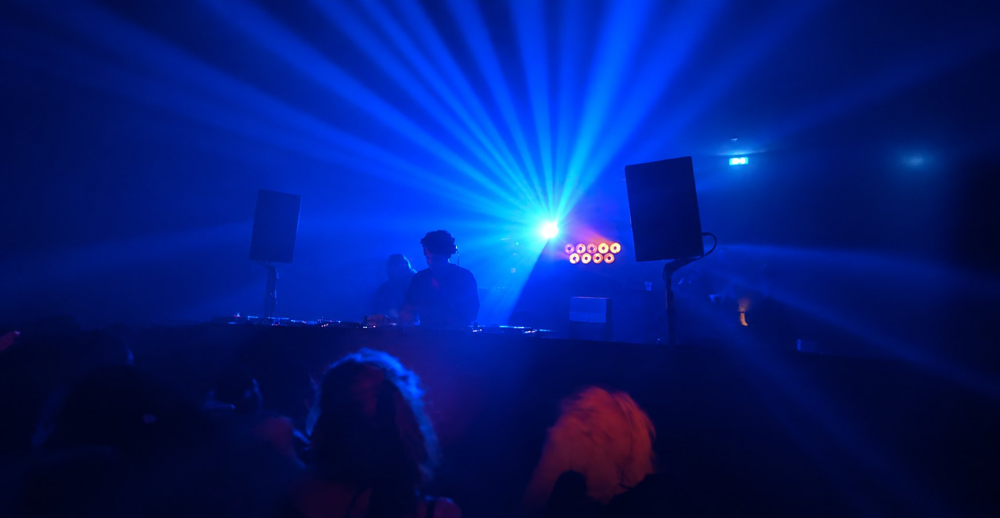
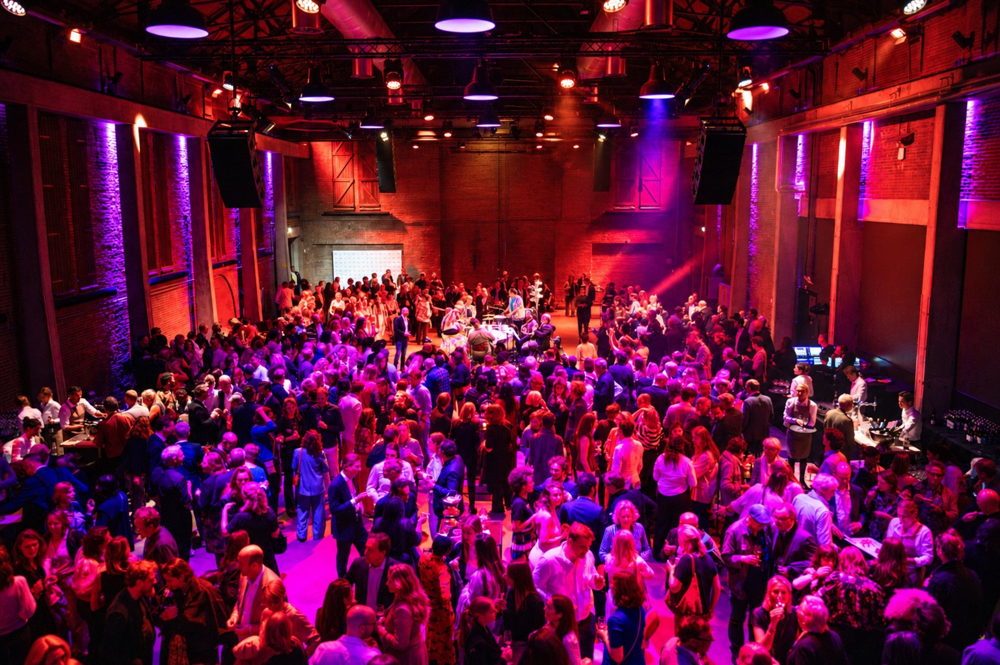
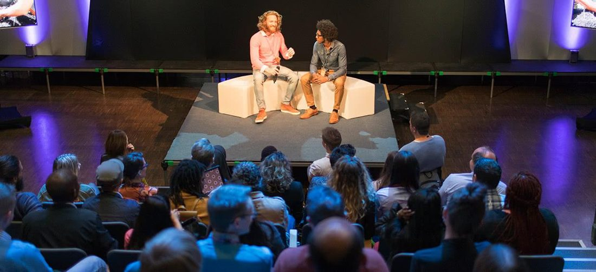
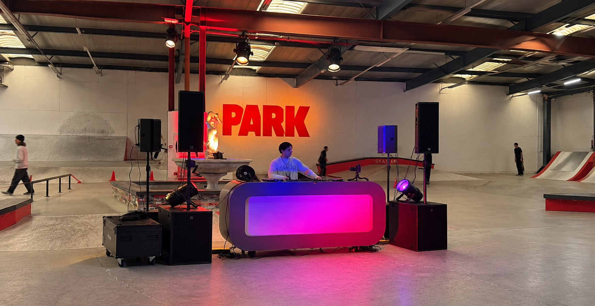
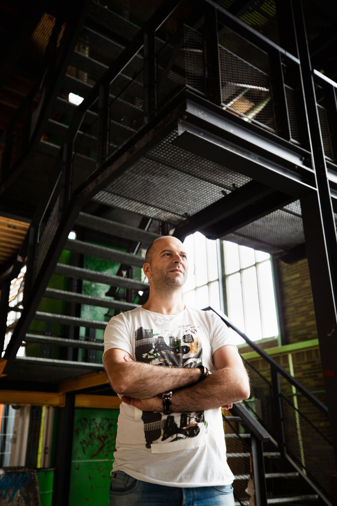
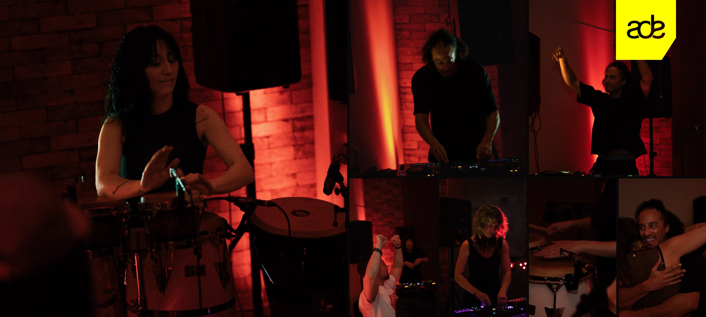
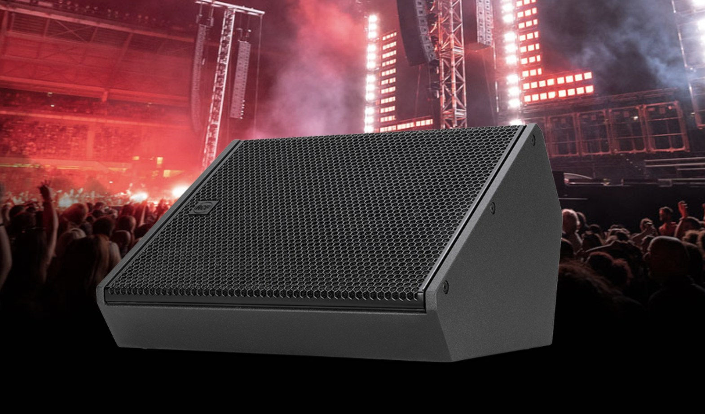
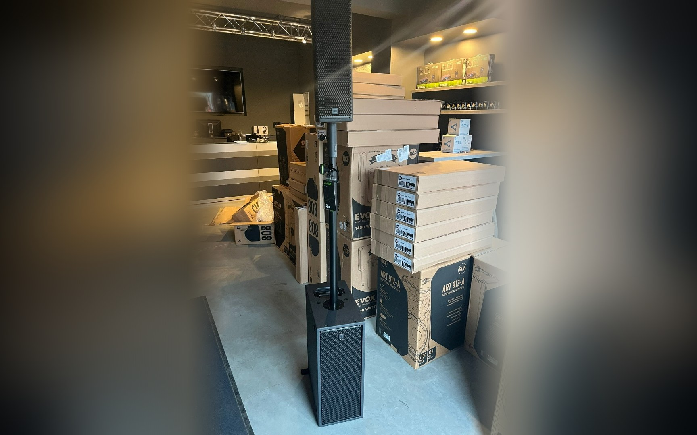
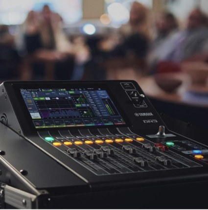

Hear the difference
Transformeer een locatie in een dansvloer, een zakelijk event in een belevenis, een dj-set in een muzikale reis.
Voor midsize events (150 tot 1.500 personen)
Uitgelicht werk
Wij werken graag samen met…
Iedereen die een feest geeft waar gedanst wordtPromotors, collectieven en wie een eigen feest met een dj of artiesten organiseert.Eventmanagers en communicatieprofessionalsDie namens hun werkgever of opdrachtgever een netwerkdag, seminar of zakelijke borrel organiseren.Merken, winkels, creatieven en bureausDie een merkactivatie, productlancering, collectiepresentatie, modeshow of in-store event organiseren.Eigenaren en exploitanten van eventlocatiesDie steeds een andere klant moeten servicen: vandaag een modeshow, morgen een seminar, overmorgen een bedrijfsfeest met dj.Wij werken graag samen met…

Dit ben ik →Iedereen die een feest geeft waar gedanst wordtPromotors, collectieven en wie een eigen feest met een dj of artiesten organiseert.
Dit ben ik →Eventmanagers en communicatieprofessionalsDie namens hun werkgever of opdrachtgever een netwerkdag, seminar of zakelijke borrel organiseren. Dit ben ik →Merken, winkels, creatieven en bureausDie een merkactivatie, productlancering, collectiepresentatie, modeshow of in-store event organiseren.
Dit ben ik →Merken, winkels, creatieven en bureausDie een merkactivatie, productlancering, collectiepresentatie, modeshow of in-store event organiseren.
Dit ben ik →Eigenaren en exploitanten van eventlocatiesDie steeds een andere klant moeten servicen: vandaag een modeshow, morgen een seminar, overmorgen een bedrijfsfeest met dj.Producten en diensten



Over HEAR
Als dj, corporate communicatiespecialist én founder van HEAR verbind ik de corporate evenementenwereld met techniek en muziek.
Nieuws en achtergronden

Lees het bericht→EventsMelandru speelt ‘Raw Drums’ in dramatisch rood

Lees het bericht→ProductnieuwsNieuw in de booth: RCF KXM 25-A floormonitor

Lees het bericht→ProductnieuwsNieuw in huis: twee sets RCF SUB 808-AS met KX 515-A

Lees het bericht→Backstage stories